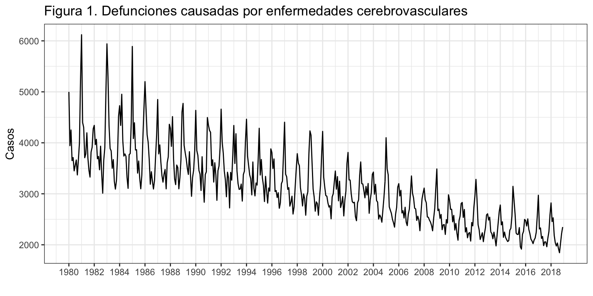
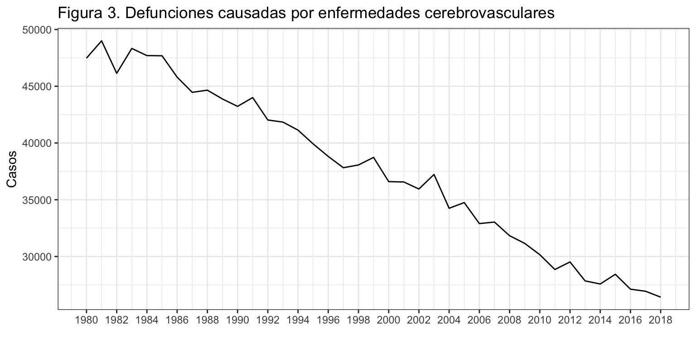
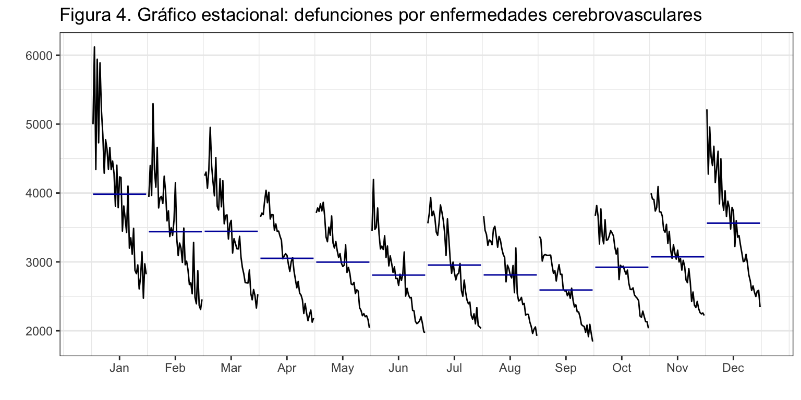
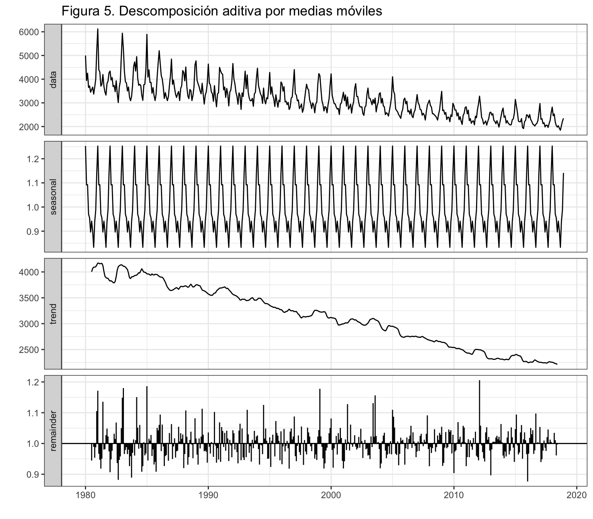
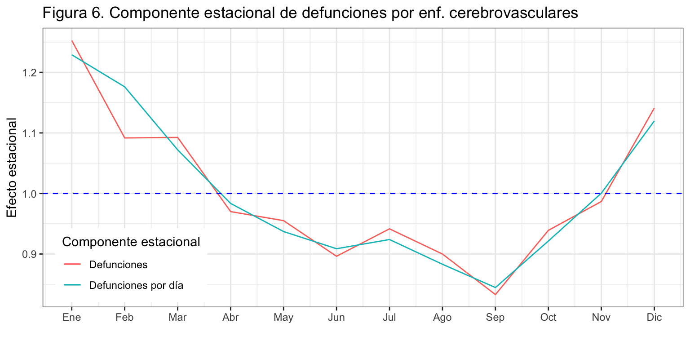
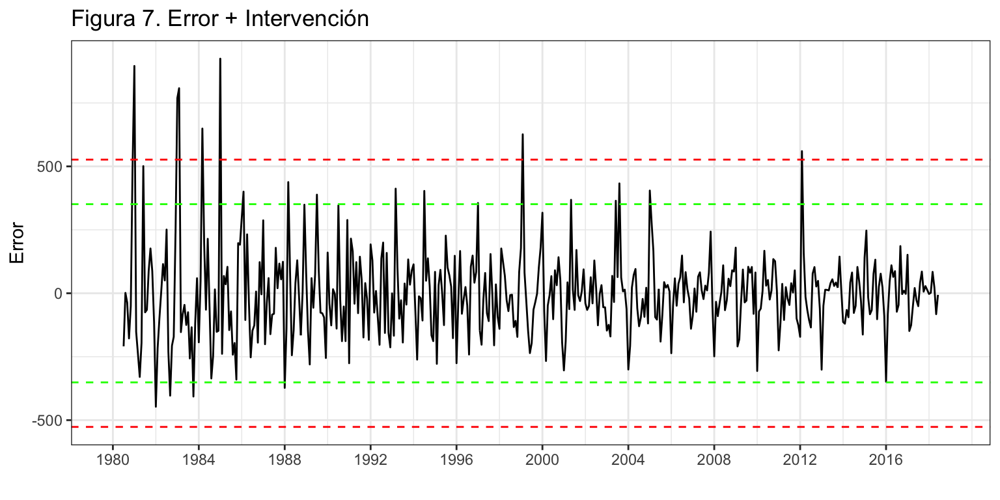
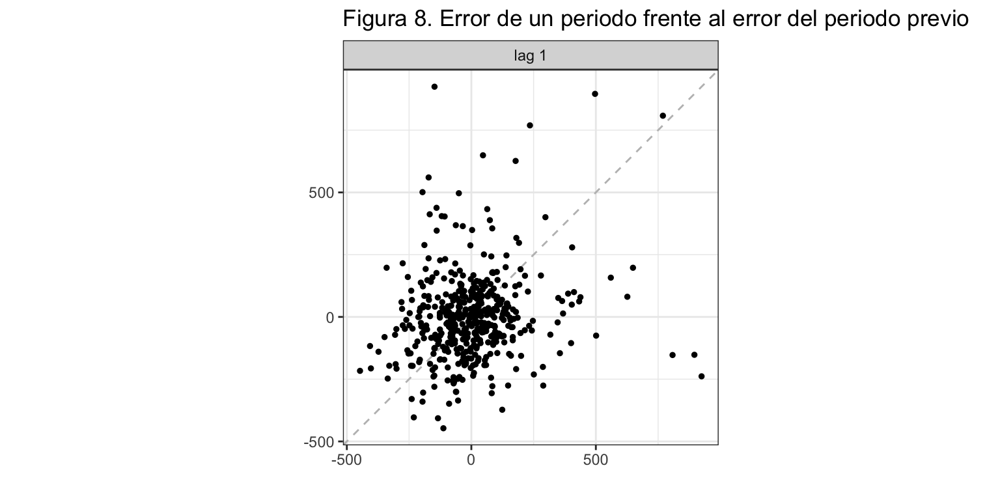
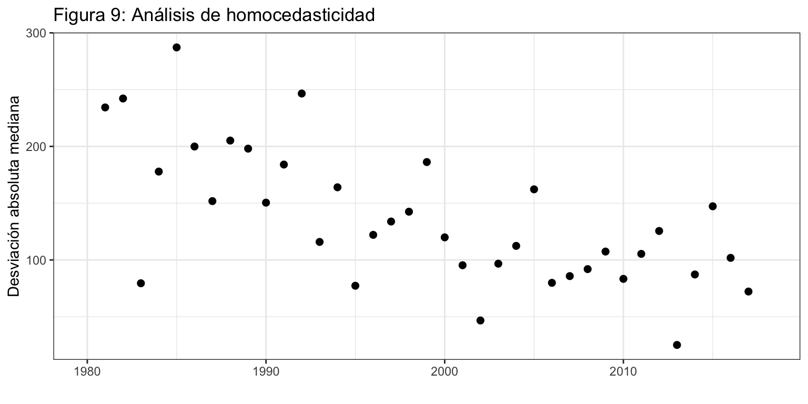

Introducción
Consideremos la serie temporal correspondiente al número de defunciones causadas por enfermedades cerebrovasculares. Esta serie está disponible en el Instituto Nacional de Estadística desde enero de 1980 hasta diciembre de 2018, un total de 39 años y 468 observaciones.
La serie y su fechado están en el fichero “Enfermedades cerebrovasculares.csv”.
DefEnfCer <- read.csv2("./series/Enfermedades cerebrovasculares.csv", header = TRUE)
DefEnfCer <- ts(DefEnfCer[,2], start = 1980, freq = 12)
Análisis preliminar gráfico
La gráfica de la serie temporal (figura 1) muestra una tendencia decreciente en el número de muertes causadas por enfermedades cerebrovasculares en España.
Las líneas verticales de la figura 1 marcan los meses de enero de cada año y permiten identificar mejor la posible componente estacional. Aparentemente las muertes causadas por enfermedades cerebrovasculares tiene una mayor incidencia en invierno. Más adelante se hará un análisis detallado de la estacionalidad.
autoplot(DefEnfCer,
xlab = "",
ylab = "Casos",
main = "Figura 1. Defunciones causadas por enfermedades cerebrovasculares") +
scale_x_continuous(breaks= seq(1980, 2018, 2))

Conforme disminuye el número de muertes año tras año, también disminuye la amplitud estacional. En los 80 la diferencia entre los meses con más y con menos incidencia de la enfermedad era muy acusada (aproximadamente 2500 casos), mientras que en los últimos años esta diferencia es más reducida (unos 1000 casos). Parece, por tanto, que estamos ante un esquema multiplicativo. Para confirmar este aspecto, se ha realizado un gráfico de puntos entre el numero anual de casos de muertes causadas por enfermedades cerebrovasculares y la desviación típica intra-anual (figura 2).
CasosAnual = aggregate(DefEnfCer, FUN = sum)
DesviacionAnual = aggregate(DefEnfCer, FUN = sd)
ggplot() +
geom_point(aes(x = CasosAnual, y = DesviacionAnual), size = 2) +
xlab("Total de casos") +
ylab("Desviación típica") +
ggtitle("Figura 2: Análisis del tipo de esquema")

Efectivamente, los años con mayor número de defunciones se corresponden con una mayor variabilidad intra-anual, por lo que confirmamos el esquema multiplicativo de la serie.
Análisis de las componentes
Tendencia
Hemos obtenido la serie anual de casos de defunciones causadas por enfermedades cerebrovasculares, que se muestra en la figura 3. Se confirma la tendencia decreciente, puntualmente interrumpida algunos años. En los 80 el número de defunciones prácticamente alcanzaba las 50,000 al año, mientras que actualmente apenas superan las 25,000. Esto supone una caída media anual de 1.5% en el número de defunciones.
autoplot(aggregate(DefEnfCer, FUN = sum),
xlab = "",
ylab = "Casos",
main = "Figura 3. Defunciones causadas por enfermedades cerebrovasculares") +
scale_x_continuous(breaks= seq(1980, 2018, 2))

Estacionalidad
Veamos ahora como varía la incidencia de las muertes causadas por enfermedades cerebrovasculares según el mes del año.
ggsubseriesplot(DefEnfCer,
polar=TRUE,
xlab = "",
ylab = "",
main = "Figura 4. Gráfico estacional: defunciones por enfermedades cerebrovasculares") +
guides(colour=FALSE)

Cada subserie en la figura 4 vuelve a mostrar la reducción en las defunciones causadas por enfermedades cerebrovasculares durante el periodo de análisis. Respecto de la estacionalidad, se aprecia que el principal determinante es la temperatura puesto que la incidencia de la enfermedad es mayor en los meses de invierno y menor en los de verano. También cabría esperar un efecto días del mes y observar más incidencia en los meses de 31 días que en los de 30, pero el efecto de la temperatura es tan dominante que anula cualquier otro efecto.
Descomposición
Vamos a obtener cada una de las componentes de la serie usando el método de medias móviles decompose. Se ha optado por este método dado que la serie muestra un esquema multiplicativo.
DefEnfCerDesMul <- decompose(DefEnfCer, type = "mult")
autoplot(DefEnfCerDesMul,
xlab = "",
main = "Figura 5. Descomposición multiplicativa por medias móviles")

La tendencia obtenida tras la descomposición no hace sino confirmar lo ya observado, una tendencia decreciente en los casos de defunciones por enfermedad cerebrovascular.
También se aprecian muy claramente varios valores atípicos en el residuo al inicio del periodo de análisis, a finales del pasado siglo y al inicio de la pasada década.
Respecto de la componente estacional, se confirma el análisis preliminar: alta incidencia en invierno, especialmente en diciembre y enero, y muy baja en verano, destacando septiembre. En concreto, en enero se detectan entre un 25% más de casos de defunciones respecto de la media anual, en diciembre un 14% más y en los meses de febrero y marzo un 9% más. Por contra, en septiembre se observa un descenso del 17%. Cabría preguntarse las causas del repunte en julio, aunque puede deberse a ser un mes de 31 días.
round(DefEnfCerDesMul$figure, 2)
[1] 1.25 1.09 1.09 0.97 0.96 0.90 0.94 0.90 0.83 0.94 0.99 1.14
A fin de aislar de la componente estacional el efecto días del mes del efecto de la temperatura, se ha aplicado la descomposición a la serie defunciones por día causadas por enfermedad cerebrovascular resultante de dividir la serie original por el número de días del mes (que obtenemos con la función monthdays). En esta nueva serie todo el efecto estacional se deberá a la temperatura.
La figura 6 muestra que la componente estacional estimada para las defunciones por día es más suave que la componente obtenida a partir la serie original. También se aprecia que el efecto del tamaño del mes es muy acusado en febrero. Para este mes el efecto estacional es el resultado de dos fuerzas opuestas: la baja temperatura incrementa la componente estacional pero el tamaño del mes (28 días) la reduce. Sobre la serie original ambas fuerzas tienen lugar y el resultado es una componente estacional para febrero similar a la de marzo. En la serie de defunciones por día el efecto número de días del mes ha sido eliminado, solo queda el efecto temperatura y por eso la componente de febrero es menor que la de enero, pero mayor que la de marzo.
El fenómeno opuesto se observa en el mes de Agosto respecto del mes de Junio: aunque Agosto es un mes cálido (menos defunciones) tiene 31 días (más defunciones) y el resultado final en la serie original es que presenta las mismas defunciones que Junio, un mes menos cálido pero de 30 días. En la serie corregida por el número de días del mes, donde solo el efecto de la temperatura es relevante, el mes Agosto tiene menos defunciones que Junio.
DefEnfCerDiaDesMul <- decompose(DefEnfCer/monthdays(DefEnfCer), type = "mult")
ggplot() +
geom_line(aes(x = 1:12, y = DefEnfCerDesMul$figure, colour = "black")) +
geom_line(aes(x = 1:12, y = DefEnfCerDiaDesMul$figure, colour = "red")) +
geom_hline(yintercept = 1, colour = "blue", lty = 2) +
ggtitle("Figura 6. Componente estacional de defunciones por enf. cerebrovasculares") +
xlab("") +
ylab("Efecto estacional") +
scale_x_continuous(breaks= 1:12,
labels = c("Ene", "Feb", "Mar", "Abr", "May", "Jun",
"Jul", "Ago", "Sep", "Oct", "Nov", "Dic")) +
scale_color_discrete(name = "Componente estacional",
labels = c("Defunciones", "Defunciones por día")) +
theme(legend.position=c(0.02,0.02), legend.justification=c(0,0))

Análisis del residuo del método de descomposición
Los métodos de descomposición no requieren de ningún supuesto sobre los residuos. Sin embargo, vamos a realizar una análisis gráfico informal de estos, adelantando conceptos que irán siendo necesarios según avancemos en el ejemplo.
Como la descomposición es multiplicativa, el error es en tanto por uno y tiene media 1. Para analizar las propiedades del residuo, vamos a calcularlo como error aditivo. Para ello vamos a restar a la serie original la serie estimada, obtenida como el producto de la tendencia por la estacionalidad, es decir, \(R_t = y_t - (T_t * S_t)\).
La figura 7 muestra el error y los intervalos de confianza (IC) al 95% (líneas en verde) y al 99.7% (líneas en rojo). Se observan siete valores claramente extremos que cruzan el IC(99.7%) por la parte superior de la gráfica. Corresponden a los meses de enero de 1981, enero y febrero de 1983, marzo de 1984, enero de 1985, febrero de 1999 y febrero de 2012, en los que los casos de defunciones por enfermedades cerebrovasculares fueron muy superiores a lo esperado. Como todos los casos tienen lugar en invierno, podrían estar relacionados con la temperatura media invernal en esos años.
error <- DefEnfCer - trendcycle(DefEnfCerDesMul) * seasonal(DefEnfCerDesMul)
sderror <- sd(error, na.rm = TRUE)
autoplot(error,
xlab = "",
ylab = "Error",
main = "Figura 7. Error + Intervención",
colour = "black") +
geom_hline(yintercept = c(3, 2, -2, -3)*sderror,
colour = c("red", "green", "green", "red"),
lty = 2) +
scale_x_continuous(breaks= seq(1980, 2018, 4))

Por otro lado, el residuo parece incorrelado pero heterocedástico. Para analizar la incorrelación con más detalle hemos obtenido la gráfica del error de un periodo \(e_t\) respecto del error del periodo previo \(e_{t-1}\) (véase figura 8). Si el error es incorrelado deberemos ver una nube de puntos sin ningún patrón, como así ocurre, salvo para los valores atípicos.
gglagplot(error,
lags = 1,
do.lines = FALSE,
colour = FALSE,
main = "Figura 8. Análisis de la incorrelación")

Para analizar mejor la homocedasticidad hemos obtenido la variabilidad del error dentro de cada año (figura 9). Si la variabilidad intra-anual se mantiene constante, podemos asumir la hipótesis de homocedasticidad. La figura 9 indica que no parece que este sea el caso, dado que conforme pasan los años la desviación típica del residuo se va reduciendo.
En todo caso este es sólo un análisis gráfico sin ninguna validez estadística.
DesviacionAnual = aggregate(error, FUN = sd)
ggplot() +
geom_point(aes(x = time(DesviacionAnual), y = DesviacionAnual), size = 2) +
ggtitle("Figura 9: Análisis de homocedasticidad") +
xlab("") +
ylab("Desviación estándar del error")

LS0tCnRpdGxlOiAiRGVmdW5jaW9uZXMgcG9yIEVuZmVybWVkYWRlcyBDZXJlYnJvdmFzY3VsYXJlcyIKc3VidGl0bGU6ICJEZXNjcmlwdGl2YSIKYXV0aG9yOiAiSXbDoW4gQXJyaWJhcyAoRGVwdG8uIEFuw6FsaXNpcyBFY29uw7NtaWNvLiBVbml2ZXJzaXRhdCBkZSBWYWzDqG5jaWEpIgpvdXRwdXQ6IAogIGh0bWxfZG9jdW1lbnQ6CiAgICB0aGVtZTogY2VydWxlYW4KICAgIGhpZ2hsaWdodDogcHlnbWVudHMgCiAgICBmaWdfY2FwdGlvbjogZmFsc2UKICAgIGRmX3ByaW50OiBrYWJsZQogICAgdG9jOiB0cnVlCiAgICB0b2NfZGVwdGg6IDIKICAgIG51bWJlcl9zZWN0aW9uczogdHJ1ZQogICAgc2VsZl9jb250YWluZWQ6IHRydWUKICAgIGNvZGVfZG93bmxvYWQ6IHRydWUKLS0tCgpgYGB7ciBjaHVua19zZXR1cCwgZWNobyA9IEZBTFNFfQprbml0cjo6b3B0c19jaHVuayRzZXQod2FybmluZyA9IEZBTFNFLCAKICAgICAgICAgICAgICAgICAgICAgIG1lc3NhZ2UgPSBGQUxTRSwgCiAgICAgICAgICAgICAgICAgICAgICBjb21tZW50ID0gIiIsCiAgICAgICAgICAgICAgICAgICAgICBmaWcuYWxpZ24gPSAiY2VudGVyIiwgCiAgICAgICAgICAgICAgICAgICAgICBmaWcuc2hvdyA9ICJob2xkIiwKICAgICAgICAgICAgICAgICAgICAgIGZpZy5oZWlnaHQgPSA0LAogICAgICAgICAgICAgICAgICAgICAgZmlnLndpZHRoID0gOCwKICAgICAgICAgICAgICAgICAgICAgIG91dC53aWR0aCA9ICI4MCUiKSAKYGBgCgpgYGB7ciBvcHRpb25zX3NldHVwLCBlY2hvID0gRkFMU0V9Cm9wdGlvbnMoc2NpcGVuID0gOTk5KSAjLSBwYXJhIHF1aXRhciBsYSBub3RhY2lvbiBjaWVudGlmaWNhCmBgYAoKYGBge3IgbGlicmVyaWFzLCBlY2hvID0gRkFMU0V9CmxpYnJhcnkoZm9yZWNhc3QpCmxpYnJhcnkoZ2dwbG90Mik7IHRoZW1lX3NldCh0aGVtZV9idygpKQpsaWJyYXJ5KGdyaWRFeHRyYSkKbGlicmFyeShncmlkKQpgYGAKClwKXAoKIyBJbnRyb2R1Y2Npw7NuCgpDb25zaWRlcmVtb3MgbGEgc2VyaWUgdGVtcG9yYWwgY29ycmVzcG9uZGllbnRlIGFsIG7Dum1lcm8gZGUgZGVmdW5jaW9uZXMgY2F1c2FkYXMgcG9yIGVuZmVybWVkYWRlcyBjZXJlYnJvdmFzY3VsYXJlcy4gRXN0YSBzZXJpZSBlc3TDoSBkaXNwb25pYmxlIGVuIGVsIEluc3RpdHV0byBOYWNpb25hbCBkZSBFc3RhZMOtc3RpY2EgZGVzZGUgZW5lcm8gZGUgMTk4MCBoYXN0YSBkaWNpZW1icmUgZGUgMjAxOCwgdW4gdG90YWwgZGUgMzkgYcOxb3MgeSA0Njggb2JzZXJ2YWNpb25lcy4KCkxhIHNlcmllIHkgc3UgZmVjaGFkbyBlc3TDoW4gZW4gZWwgZmljaGVybyAiRW5mZXJtZWRhZGVzIGNlcmVicm92YXNjdWxhcmVzLmNzdiIuCgoKYGBge3J9CkRlZkVuZkNlciA8LSByZWFkLmNzdjIoIi4vc2VyaWVzL0VuZmVybWVkYWRlcyBjZXJlYnJvdmFzY3VsYXJlcy5jc3YiLCBoZWFkZXIgPSBUUlVFKQpEZWZFbmZDZXIgPC0gdHMoRGVmRW5mQ2VyWywyXSwgc3RhcnQgPSAxOTgwLCBmcmVxID0gMTIpCmBgYAoKXApcCgojIEFuw6FsaXNpcyBwcmVsaW1pbmFyIGdyw6FmaWNvCgpMYSBncsOhZmljYSBkZSBsYSBzZXJpZSB0ZW1wb3JhbCAoZmlndXJhIDEpIG11ZXN0cmEgdW5hIF9fdGVuZGVuY2lhX18gZGVjcmVjaWVudGUgZW4gZWwgbsO6bWVybyBkZSBtdWVydGVzIGNhdXNhZGFzIHBvciBlbmZlcm1lZGFkZXMgY2VyZWJyb3Zhc2N1bGFyZXMgZW4gRXNwYcOxYS4gCgpMYXMgbMOtbmVhcyB2ZXJ0aWNhbGVzIGRlIGxhIGZpZ3VyYSAxIG1hcmNhbiBsb3MgbWVzZXMgZGUgZW5lcm8gZGUgY2FkYSBhw7FvIHkgcGVybWl0ZW4gaWRlbnRpZmljYXIgbWVqb3IgbGEgcG9zaWJsZSBfX2NvbXBvbmVudGUgZXN0YWNpb25hbF9fLiBBcGFyZW50ZW1lbnRlIGxhcyBtdWVydGVzIGNhdXNhZGFzIHBvciBlbmZlcm1lZGFkZXMgY2VyZWJyb3Zhc2N1bGFyZXMgdGllbmUgdW5hIG1heW9yIGluY2lkZW5jaWEgZW4gaW52aWVybm8uIE3DoXMgYWRlbGFudGUgc2UgaGFyw6EgdW4gYW7DoWxpc2lzIGRldGFsbGFkbyBkZSBsYSBlc3RhY2lvbmFsaWRhZC4KCmBgYHtyfQphdXRvcGxvdChEZWZFbmZDZXIsCiAgICAgICAgIHhsYWIgPSAiIiwKICAgICAgICAgeWxhYiA9ICJDYXNvcyIsCiAgICAgICAgIG1haW4gPSAiRmlndXJhIDEuIERlZnVuY2lvbmVzIGNhdXNhZGFzIHBvciBlbmZlcm1lZGFkZXMgY2VyZWJyb3Zhc2N1bGFyZXMiKSArCiAgc2NhbGVfeF9jb250aW51b3VzKGJyZWFrcz0gc2VxKDE5ODAsIDIwMTgsIDIpKSAKYGBgCgpDb25mb3JtZSBkaXNtaW51eWUgZWwgbsO6bWVybyBkZSBtdWVydGVzIGHDsW8gdHJhcyBhw7FvLCB0YW1iacOpbiBkaXNtaW51eWUgbGEgYW1wbGl0dWQgZXN0YWNpb25hbC4gRW4gbG9zIDgwIGxhIGRpZmVyZW5jaWEgZW50cmUgbG9zIG1lc2VzIGNvbiBtw6FzIHkgY29uIG1lbm9zIGluY2lkZW5jaWEgZGUgbGEgZW5mZXJtZWRhZCBlcmEgbXV5IGFjdXNhZGEgKGFwcm94aW1hZGFtZW50ZSAyNTAwIGNhc29zKSwgbWllbnRyYXMgcXVlIGVuIGxvcyDDumx0aW1vcyBhw7FvcyBlc3RhIGRpZmVyZW5jaWEgZXMgbcOhcyByZWR1Y2lkYSAodW5vcyAxMDAwIGNhc29zKS4gUGFyZWNlLCBwb3IgdGFudG8sIHF1ZSBlc3RhbW9zIGFudGUgdW4gX19lc3F1ZW1hIG11bHRpcGxpY2F0aXZvX18uIFBhcmEgY29uZmlybWFyIGVzdGUgYXNwZWN0bywgc2UgaGEgcmVhbGl6YWRvIHVuIGdyw6FmaWNvIGRlIHB1bnRvcyBlbnRyZSBlbCBudW1lcm8gYW51YWwgZGUgY2Fzb3MgZGUgbXVlcnRlcyBjYXVzYWRhcyBwb3IgZW5mZXJtZWRhZGVzIGNlcmVicm92YXNjdWxhcmVzIHkgbGEgZGVzdmlhY2nDs24gdMOtcGljYSBpbnRyYS1hbnVhbCAoZmlndXJhIDIpLgoKYGBge3J9CkNhc29zQW51YWwgPSBhZ2dyZWdhdGUoRGVmRW5mQ2VyLCBGVU4gPSBzdW0pCkRlc3ZpYWNpb25BbnVhbCA9IGFnZ3JlZ2F0ZShEZWZFbmZDZXIsIEZVTiA9IHNkKQoKZ2dwbG90KCkgKwogIGdlb21fcG9pbnQoYWVzKHggPSBDYXNvc0FudWFsLCB5ID0gRGVzdmlhY2lvbkFudWFsKSwgc2l6ZSA9IDIpICsKICB4bGFiKCJUb3RhbCBkZSBjYXNvcyIpICsgCiAgeWxhYigiRGVzdmlhY2nDs24gdMOtcGljYSIpICsgCiAgZ2d0aXRsZSgiRmlndXJhIDI6IEFuw6FsaXNpcyBkZWwgdGlwbyBkZSBlc3F1ZW1hIikgCmBgYAoKRWZlY3RpdmFtZW50ZSwgbG9zIGHDsW9zIGNvbiBtYXlvciBuw7ptZXJvIGRlIGRlZnVuY2lvbmVzIHNlIGNvcnJlc3BvbmRlbiBjb24gdW5hIG1heW9yIHZhcmlhYmlsaWRhZCBpbnRyYS1hbnVhbCwgcG9yIGxvIHF1ZSBjb25maXJtYW1vcyBlbCBlc3F1ZW1hIG11bHRpcGxpY2F0aXZvIGRlIGxhIHNlcmllLgoKXApcCgojIEFuw6FsaXNpcyBkZSBsYXMgY29tcG9uZW50ZXMKClwKCiMjIFRlbmRlbmNpYQoKSGVtb3Mgb2J0ZW5pZG8gbGEgc2VyaWUgYW51YWwgZGUgY2Fzb3MgZGUgZGVmdW5jaW9uZXMgY2F1c2FkYXMgcG9yIGVuZmVybWVkYWRlcyBjZXJlYnJvdmFzY3VsYXJlcywgcXVlIHNlIG11ZXN0cmEgZW4gbGEgZmlndXJhIDMuIFNlIGNvbmZpcm1hIGxhIHRlbmRlbmNpYSBkZWNyZWNpZW50ZSwgcHVudHVhbG1lbnRlIGludGVycnVtcGlkYSBhbGd1bm9zIGHDsW9zLiBFbiBsb3MgODAgZWwgbsO6bWVybyBkZSBkZWZ1bmNpb25lcyBwcsOhY3RpY2FtZW50ZSBhbGNhbnphYmEgbGFzIDUwLDAwMCBhbCBhw7FvLCBtaWVudHJhcyBxdWUgYWN0dWFsbWVudGUgYXBlbmFzIHN1cGVyYW4gbGFzIDI1LDAwMC4gRXN0byBzdXBvbmUgdW5hIGNhw61kYSBtZWRpYSBhbnVhbCBkZSAxLjUlIGVuIGVsIG7Dum1lcm8gZGUgZGVmdW5jaW9uZXMuCgpgYGB7cn0KYXV0b3Bsb3QoYWdncmVnYXRlKERlZkVuZkNlciwgRlVOID0gc3VtKSwKICAgICAgICAgeGxhYiA9ICIiLAogICAgICAgICB5bGFiID0gIkNhc29zIiwKICAgICAgICAgbWFpbiA9ICJGaWd1cmEgMy4gRGVmdW5jaW9uZXMgY2F1c2FkYXMgcG9yIGVuZmVybWVkYWRlcyBjZXJlYnJvdmFzY3VsYXJlcyIpICsKICBzY2FsZV94X2NvbnRpbnVvdXMoYnJlYWtzPSBzZXEoMTk4MCwgMjAxOCwgMikpIApgYGAKClwKCiMjIEVzdGFjaW9uYWxpZGFkCgpWZWFtb3MgYWhvcmEgY29tbyB2YXLDrWEgbGEgaW5jaWRlbmNpYSBkZSBsYXMgbXVlcnRlcyBjYXVzYWRhcyBwb3IgZW5mZXJtZWRhZGVzIGNlcmVicm92YXNjdWxhcmVzIHNlZ8O6biBlbCBtZXMgZGVsIGHDsW8uIAoKYGBge3J9Cmdnc3Vic2VyaWVzcGxvdChEZWZFbmZDZXIsIAogICAgICAgICAgICAgcG9sYXI9VFJVRSwKICAgICAgICAgICAgIHhsYWIgPSAiIiwKICAgICAgICAgICAgIHlsYWIgPSAiIiwKICAgICAgICAgICAgIG1haW4gPSAiRmlndXJhIDQuIEdyw6FmaWNvIGVzdGFjaW9uYWw6IGRlZnVuY2lvbmVzIHBvciBlbmZlcm1lZGFkZXMgY2VyZWJyb3Zhc2N1bGFyZXMiKSArCiAgZ3VpZGVzKGNvbG91cj1GQUxTRSkKYGBgCgpDYWRhIHN1YnNlcmllIGVuIGxhIGZpZ3VyYSA0IHZ1ZWx2ZSBhIG1vc3RyYXIgbGEgcmVkdWNjacOzbiBlbiBsYXMgZGVmdW5jaW9uZXMgY2F1c2FkYXMgcG9yIGVuZmVybWVkYWRlcyBjZXJlYnJvdmFzY3VsYXJlcyBkdXJhbnRlIGVsIHBlcmlvZG8gZGUgYW7DoWxpc2lzLiBSZXNwZWN0byBkZSBsYSBlc3RhY2lvbmFsaWRhZCwgc2UgYXByZWNpYSBxdWUgZWwgcHJpbmNpcGFsIGRldGVybWluYW50ZSBlcyBsYSB0ZW1wZXJhdHVyYSBwdWVzdG8gcXVlIGxhIGluY2lkZW5jaWEgZGUgbGEgZW5mZXJtZWRhZCBlcyBtYXlvciBlbiBsb3MgbWVzZXMgZGUgaW52aWVybm8geSBtZW5vciBlbiBsb3MgZGUgdmVyYW5vLiBUYW1iacOpbiBjYWJyw61hIGVzcGVyYXIgdW4gZWZlY3RvIF9kw61hcyBkZWwgbWVzXyB5IG9ic2VydmFyIG3DoXMgaW5jaWRlbmNpYSBlbiBsb3MgbWVzZXMgZGUgMzEgZMOtYXMgcXVlIGVuIGxvcyBkZSAzMCwgcGVybyBlbCBlZmVjdG8gZGUgbGEgdGVtcGVyYXR1cmEgZXMgdGFuIGRvbWluYW50ZSBxdWUgYW51bGEgY3VhbHF1aWVyIG90cm8gZWZlY3RvLgoKXApcCgojIERlc2NvbXBvc2ljacOzbgoKVmFtb3MgYSBvYnRlbmVyIGNhZGEgdW5hIGRlIGxhcyBjb21wb25lbnRlcyBkZSBsYSBzZXJpZSB1c2FuZG8gZWwgbcOpdG9kbyBkZSBtZWRpYXMgbcOzdmlsZXMgYGRlY29tcG9zZWAuIFNlIGhhIG9wdGFkbyBwb3IgZXN0ZSBtw6l0b2RvIGRhZG8gcXVlIGxhIHNlcmllIG11ZXN0cmEgdW4gZXNxdWVtYSBtdWx0aXBsaWNhdGl2by4KCmBgYHtyLCBmaWcuaGVpZ2h0PTd9CkRlZkVuZkNlckRlc011bCA8LSBkZWNvbXBvc2UoRGVmRW5mQ2VyLCB0eXBlID0gIm11bHQiKQphdXRvcGxvdChEZWZFbmZDZXJEZXNNdWwsCiAgICAgICAgIHhsYWIgPSAiIiwKICAgICAgICAgbWFpbiA9ICJGaWd1cmEgNS4gRGVzY29tcG9zaWNpw7NuIG11bHRpcGxpY2F0aXZhIHBvciBtZWRpYXMgbcOzdmlsZXMiKQpgYGAKCkxhIF9fdGVuZGVuY2lhX18gb2J0ZW5pZGEgdHJhcyBsYSBkZXNjb21wb3NpY2nDs24gbm8gaGFjZSBzaW5vIGNvbmZpcm1hciBsbyB5YSBvYnNlcnZhZG8sIHVuYSB0ZW5kZW5jaWEgZGVjcmVjaWVudGUgZW4gbG9zIGNhc29zIGRlIGRlZnVuY2lvbmVzIHBvciBlbmZlcm1lZGFkIGNlcmVicm92YXNjdWxhci4gCgpUYW1iacOpbiBzZSBhcHJlY2lhbiBtdXkgY2xhcmFtZW50ZSB2YXJpb3MgdmFsb3JlcyBhdMOtcGljb3MgZW4gZWwgX19yZXNpZHVvX18gYWwgaW5pY2lvIGRlbCBwZXJpb2RvIGRlIGFuw6FsaXNpcywgYSBmaW5hbGVzIGRlbCBwYXNhZG8gc2lnbG8geSBhbCBpbmljaW8gZGUgbGEgcGFzYWRhIGTDqWNhZGEuCgpSZXNwZWN0byBkZSBsYSBfX2NvbXBvbmVudGUgZXN0YWNpb25hbF9fLCBzZSBjb25maXJtYSBlbCBhbsOhbGlzaXMgcHJlbGltaW5hcjogYWx0YSBpbmNpZGVuY2lhIGVuIGludmllcm5vLCBlc3BlY2lhbG1lbnRlIGVuIGRpY2llbWJyZSB5IGVuZXJvLCB5IG11eSBiYWphIGVuIHZlcmFubywgZGVzdGFjYW5kbyBzZXB0aWVtYnJlLiBFbiBjb25jcmV0bywgZW4gZW5lcm8gc2UgZGV0ZWN0YW4gZW50cmUgdW4gMjUlIG3DoXMgZGUgY2Fzb3MgZGUgZGVmdW5jaW9uZXMgcmVzcGVjdG8gZGUgbGEgbWVkaWEgYW51YWwsIGVuIGRpY2llbWJyZSB1biAxNCUgbcOhcyB5IGVuIGxvcyBtZXNlcyBkZSBmZWJyZXJvIHkgbWFyem8gdW4gOSUgbcOhcy4gUG9yIGNvbnRyYSwgZW4gc2VwdGllbWJyZSBzZSBvYnNlcnZhIHVuIGRlc2NlbnNvIGRlbCAxNyUuIENhYnLDrWEgcHJlZ3VudGFyc2UgbGFzIGNhdXNhcyBkZWwgcmVwdW50ZSBlbiBqdWxpbywgYXVucXVlIHB1ZWRlIGRlYmVyc2UgYSBzZXIgdW4gbWVzIGRlIDMxIGTDrWFzLgoKYGBge3J9CnJvdW5kKERlZkVuZkNlckRlc011bCRmaWd1cmUsIDIpCmBgYAoKQSBmaW4gZGUgYWlzbGFyIGRlIGxhIGNvbXBvbmVudGUgZXN0YWNpb25hbCBlbCBlZmVjdG8gX2TDrWFzIGRlbCBtZXNfIGRlbCBlZmVjdG8gZGUgbGEgdGVtcGVyYXR1cmEsIHNlIGhhIGFwbGljYWRvIGxhIGRlc2NvbXBvc2ljacOzbiBhIGxhIHNlcmllIF9kZWZ1bmNpb25lcyBwb3IgZMOtYSBjYXVzYWRhcyBwb3IgZW5mZXJtZWRhZCBjZXJlYnJvdmFzY3VsYXJfIHJlc3VsdGFudGUgZGUgZGl2aWRpciBsYSBzZXJpZSBvcmlnaW5hbCBwb3IgZWwgbsO6bWVybyBkZSBkw61hcyBkZWwgbWVzIChxdWUgb2J0ZW5lbW9zIGNvbiBsYSBmdW5jacOzbiBgbW9udGhkYXlzYCkuIEVuIGVzdGEgbnVldmEgc2VyaWUgdG9kbyBlbCBlZmVjdG8gZXN0YWNpb25hbCBzZSBkZWJlcsOhIGEgbGEgdGVtcGVyYXR1cmEuCgpMYSBmaWd1cmEgNiBtdWVzdHJhIHF1ZSBsYSBjb21wb25lbnRlIGVzdGFjaW9uYWwgZXN0aW1hZGEgcGFyYSBsYXMgZGVmdW5jaW9uZXMgcG9yIGTDrWEgZXMgbcOhcyBzdWF2ZSBxdWUgbGEgY29tcG9uZW50ZSBvYnRlbmlkYSBhIHBhcnRpciBsYSBzZXJpZSBvcmlnaW5hbC4gVGFtYmnDqW4gc2UgYXByZWNpYSBxdWUgZWwgZWZlY3RvIGRlbCB0YW1hw7FvIGRlbCBtZXMgZXMgbXV5IGFjdXNhZG8gZW4gZmVicmVyby4gUGFyYSBlc3RlIG1lcyBlbCBlZmVjdG8gZXN0YWNpb25hbCBlcyBlbCByZXN1bHRhZG8gZGUgZG9zIGZ1ZXJ6YXMgb3B1ZXN0YXM6IGxhIGJhamEgdGVtcGVyYXR1cmEgaW5jcmVtZW50YSBsYSBjb21wb25lbnRlIGVzdGFjaW9uYWwgcGVybyBlbCB0YW1hw7FvIGRlbCBtZXMgKDI4IGTDrWFzKSBsYSByZWR1Y2UuIFNvYnJlIGxhIHNlcmllIG9yaWdpbmFsIGFtYmFzIGZ1ZXJ6YXMgdGllbmVuIGx1Z2FyIHkgZWwgcmVzdWx0YWRvIGVzIHVuYSBjb21wb25lbnRlIGVzdGFjaW9uYWwgcGFyYSBmZWJyZXJvIHNpbWlsYXIgYSBsYSBkZSBtYXJ6by4gRW4gbGEgc2VyaWUgZGUgZGVmdW5jaW9uZXMgcG9yIGTDrWEgZWwgZWZlY3RvIG7Dum1lcm8gZGUgZMOtYXMgZGVsIG1lcyBoYSBzaWRvIGVsaW1pbmFkbywgc29sbyBxdWVkYSBlbCBlZmVjdG8gdGVtcGVyYXR1cmEgeSBwb3IgZXNvIGxhIGNvbXBvbmVudGUgZGUgZmVicmVybyBlcyBtZW5vciBxdWUgbGEgZGUgZW5lcm8sIHBlcm8gbWF5b3IgcXVlIGxhIGRlIG1hcnpvLgoKRWwgZmVuw7NtZW5vIG9wdWVzdG8gc2Ugb2JzZXJ2YSBlbiBlbCBtZXMgZGUgQWdvc3RvIHJlc3BlY3RvIGRlbCBtZXMgZGUgSnVuaW86IGF1bnF1ZSBBZ29zdG8gZXMgdW4gbWVzIGPDoWxpZG8gKG1lbm9zIGRlZnVuY2lvbmVzKSB0aWVuZSAzMSBkw61hcyAobcOhcyBkZWZ1bmNpb25lcykgeSBlbCByZXN1bHRhZG8gZmluYWwgZW4gbGEgc2VyaWUgb3JpZ2luYWwgZXMgcXVlIHByZXNlbnRhIGxhcyBtaXNtYXMgZGVmdW5jaW9uZXMgcXVlIEp1bmlvLCB1biBtZXMgbWVub3MgY8OhbGlkbyBwZXJvIGRlIDMwIGTDrWFzLiBFbiBsYSBzZXJpZSBjb3JyZWdpZGEgcG9yIGVsIG7Dum1lcm8gZGUgZMOtYXMgZGVsIG1lcywgZG9uZGUgc29sbyBlbCBlZmVjdG8gZGUgbGEgdGVtcGVyYXR1cmEgZXMgcmVsZXZhbnRlLCBlbCBtZXMgQWdvc3RvIHRpZW5lIG1lbm9zIGRlZnVuY2lvbmVzIHF1ZSBKdW5pby4KCgpgYGB7cn0KRGVmRW5mQ2VyRGlhRGVzTXVsIDwtIGRlY29tcG9zZShEZWZFbmZDZXIvbW9udGhkYXlzKERlZkVuZkNlciksIHR5cGUgPSAibXVsdCIpCgpnZ3Bsb3QoKSArCiAgZ2VvbV9saW5lKGFlcyh4ID0gMToxMiwgeSA9IERlZkVuZkNlckRlc011bCRmaWd1cmUsIGNvbG91ciA9ICJibGFjayIpKSArIAogIGdlb21fbGluZShhZXMoeCA9IDE6MTIsIHkgPSBEZWZFbmZDZXJEaWFEZXNNdWwkZmlndXJlLCBjb2xvdXIgPSAicmVkIikpICsgCiAgZ2VvbV9obGluZSh5aW50ZXJjZXB0ID0gMSwgY29sb3VyID0gImJsdWUiLCBsdHkgPSAyKSArCiAgZ2d0aXRsZSgiRmlndXJhIDYuIENvbXBvbmVudGUgZXN0YWNpb25hbCBkZSBkZWZ1bmNpb25lcyBwb3IgZW5mLiBjZXJlYnJvdmFzY3VsYXJlcyIpICsKICB4bGFiKCIiKSArCiAgeWxhYigiRWZlY3RvIGVzdGFjaW9uYWwiKSArCiAgc2NhbGVfeF9jb250aW51b3VzKGJyZWFrcz0gMToxMiwgCiAgICAgICAgICAgICAgICAgICAgIGxhYmVscyA9IGMoIkVuZSIsICJGZWIiLCAiTWFyIiwgIkFiciIsICJNYXkiLCAiSnVuIiwgCiAgICAgICAgICAgICAgICAgICAgICAgICAgICAgICAgIkp1bCIsICJBZ28iLCAiU2VwIiwgIk9jdCIsICJOb3YiLCAiRGljIikpICsKICBzY2FsZV9jb2xvcl9kaXNjcmV0ZShuYW1lID0gIkNvbXBvbmVudGUgZXN0YWNpb25hbCIsIAogICAgICAgICAgICAgICAgICAgICAgIGxhYmVscyA9IGMoIkRlZnVuY2lvbmVzIiwgIkRlZnVuY2lvbmVzIHBvciBkw61hIikpICsKICB0aGVtZShsZWdlbmQucG9zaXRpb249YygwLjAyLDAuMDIpLCBsZWdlbmQuanVzdGlmaWNhdGlvbj1jKDAsMCkpCmBgYAoKXApcCgojIEFuw6FsaXNpcyBkZWwgcmVzaWR1byBkZWwgbcOpdG9kbyBkZSBkZXNjb21wb3NpY2nDs24KCkxvcyBtw6l0b2RvcyBkZSBkZXNjb21wb3NpY2nDs24gbm8gcmVxdWllcmVuIGRlIG5pbmfDum4gc3VwdWVzdG8gc29icmUgbG9zIHJlc2lkdW9zLiBTaW4gZW1iYXJnbywgdmFtb3MgYSByZWFsaXphciB1bmEgYW7DoWxpc2lzIGdyw6FmaWNvIGluZm9ybWFsIGRlIGVzdG9zLCBhZGVsYW50YW5kbyBjb25jZXB0b3MgcXVlIGlyw6FuIHNpZW5kbyBuZWNlc2FyaW9zIHNlZ8O6biBhdmFuY2Vtb3MgZW4gZWwgZWplbXBsby4KCkNvbW8gbGEgZGVzY29tcG9zaWNpw7NuIGVzIG11bHRpcGxpY2F0aXZhLCBlbCBlcnJvciBlcyBlbiB0YW50byBwb3IgdW5vIHkgdGllbmUgbWVkaWEgMS4gUGFyYSBhbmFsaXphciBsYXMgcHJvcGllZGFkZXMgZGVsIHJlc2lkdW8sIHZhbW9zIGEgY2FsY3VsYXJsbyBjb21vIGVycm9yIGFkaXRpdm8uIFBhcmEgZWxsbyB2YW1vcyBhIHJlc3RhciBhIGxhIHNlcmllIG9yaWdpbmFsIGxhIHNlcmllIGVzdGltYWRhLCBvYnRlbmlkYSBjb21vIGVsIHByb2R1Y3RvIGRlIGxhIHRlbmRlbmNpYSBwb3IgbGEgZXN0YWNpb25hbGlkYWQsIGVzIGRlY2lyLCAkUl90ID0geV90IC0gKFRfdCAqIFNfdCkkLgoKTGEgZmlndXJhIDcgbXVlc3RyYSBlbCBlcnJvciB5IGxvcyBpbnRlcnZhbG9zIGRlIGNvbmZpYW56YSAoSUMpIGFsIDk1JSAobMOtbmVhcyBlbiB2ZXJkZSkgeSBhbCA5OS43JSAobMOtbmVhcyBlbiByb2pvKS4gU2Ugb2JzZXJ2YW4gc2lldGUgdmFsb3JlcyBjbGFyYW1lbnRlIGV4dHJlbW9zIHF1ZSBjcnV6YW4gZWwgSUMoOTkuNyUpIHBvciBsYSBwYXJ0ZSBzdXBlcmlvciBkZSBsYSBncsOhZmljYS4gQ29ycmVzcG9uZGVuIGEgbG9zIG1lc2VzIGRlIGVuZXJvIGRlIDE5ODEsIGVuZXJvIHkgZmVicmVybyBkZSAxOTgzLCBtYXJ6byBkZSAxOTg0LCBlbmVybyBkZSAxOTg1LCBmZWJyZXJvIGRlIDE5OTkgeSBmZWJyZXJvIGRlIDIwMTIsIGVuIGxvcyBxdWUgbG9zIGNhc29zIGRlIGRlZnVuY2lvbmVzIHBvciBlbmZlcm1lZGFkZXMgY2VyZWJyb3Zhc2N1bGFyZXMgZnVlcm9uIG11eSBzdXBlcmlvcmVzIGEgbG8gZXNwZXJhZG8uIENvbW8gdG9kb3MgbG9zIGNhc29zIHRpZW5lbiBsdWdhciBlbiBpbnZpZXJubywgcG9kcsOtYW4gZXN0YXIgcmVsYWNpb25hZG9zIGNvbiBsYSB0ZW1wZXJhdHVyYSBtZWRpYSBpbnZlcm5hbCBlbiBlc29zIGHDsW9zLgoKYGBge3J9CmVycm9yIDwtIERlZkVuZkNlciAtIHRyZW5kY3ljbGUoRGVmRW5mQ2VyRGVzTXVsKSAqIHNlYXNvbmFsKERlZkVuZkNlckRlc011bCkKCnNkZXJyb3IgPC0gc2QoZXJyb3IsIG5hLnJtID0gVFJVRSkKCmF1dG9wbG90KGVycm9yLAogICAgICAgICB4bGFiID0gIiIsCiAgICAgICAgIHlsYWIgPSAiRXJyb3IiLAogICAgICAgICBtYWluID0gIkZpZ3VyYSA3LiBFcnJvciArIEludGVydmVuY2nDs24iLAogICAgICAgICBjb2xvdXIgPSAiYmxhY2siKSArCiAgZ2VvbV9obGluZSh5aW50ZXJjZXB0ID0gYygzLCAyLCAtMiwgLTMpKnNkZXJyb3IsIAogICAgICAgICAgICAgY29sb3VyID0gYygicmVkIiwgImdyZWVuIiwgImdyZWVuIiwgInJlZCIpLAogICAgICAgICAgICAgbHR5ID0gMikgKyAKICBzY2FsZV94X2NvbnRpbnVvdXMoYnJlYWtzPSBzZXEoMTk4MCwgMjAxOCwgNCkpIApgYGAKClBvciBvdHJvIGxhZG8sIGVsIHJlc2lkdW8gcGFyZWNlIGluY29ycmVsYWRvIHBlcm8gaGV0ZXJvY2Vkw6FzdGljby4gUGFyYSBhbmFsaXphciBsYSBpbmNvcnJlbGFjacOzbiBjb24gbcOhcyBkZXRhbGxlIGhlbW9zIG9idGVuaWRvIGxhIGdyw6FmaWNhIGRlbCBlcnJvciBkZSB1biBwZXJpb2RvICRlX3QkIHJlc3BlY3RvIGRlbCBlcnJvciBkZWwgcGVyaW9kbyBwcmV2aW8gJGVfe3QtMX0kICh2w6lhc2UgZmlndXJhIDgpLiAgU2kgZWwgZXJyb3IgZXMgaW5jb3JyZWxhZG8gZGViZXJlbW9zIHZlciB1bmEgbnViZSBkZSBwdW50b3Mgc2luIG5pbmfDum4gcGF0csOzbiwgY29tbyBhc8OtIG9jdXJyZSwgc2Fsdm8gcGFyYSBsb3MgdmFsb3JlcyBhdMOtcGljb3MuCgpgYGB7cn0KZ2dsYWdwbG90KGVycm9yLCAKICAgICAgICAgIGxhZ3MgPSAxLCAKICAgICAgICAgIGRvLmxpbmVzID0gRkFMU0UsIAogICAgICAgICAgY29sb3VyID0gRkFMU0UsIAogICAgICAgICAgbWFpbiA9ICJGaWd1cmEgOC4gQW7DoWxpc2lzIGRlIGxhIGluY29ycmVsYWNpw7NuIikKYGBgCgpQYXJhIGFuYWxpemFyIG1lam9yIGxhIGhvbW9jZWRhc3RpY2lkYWQgaGVtb3Mgb2J0ZW5pZG8gbGEgdmFyaWFiaWxpZGFkIGRlbCBlcnJvciBkZW50cm8gZGUgY2FkYSBhw7FvIChmaWd1cmEgOSkuIFNpIGxhIHZhcmlhYmlsaWRhZCBpbnRyYS1hbnVhbCBzZSBtYW50aWVuZSBjb25zdGFudGUsIHBvZGVtb3MgYXN1bWlyIGxhIGhpcMOzdGVzaXMgZGUgaG9tb2NlZGFzdGljaWRhZC4gTGEgZmlndXJhIDkgaW5kaWNhIHF1ZSBubyBwYXJlY2UgcXVlIGVzdGUgc2VhIGVsIGNhc28sIGRhZG8gcXVlIGNvbmZvcm1lIHBhc2FuIGxvcyBhw7FvcyBsYSBkZXN2aWFjacOzbiB0w61waWNhIGRlbCByZXNpZHVvIHNlIHZhIHJlZHVjaWVuZG8uCgpFbiB0b2RvIGNhc28gZXN0ZSBlcyBzw7NsbyB1biBhbsOhbGlzaXMgZ3LDoWZpY28gc2luIG5pbmd1bmEgdmFsaWRleiBlc3RhZMOtc3RpY2EuCgpgYGB7cn0KRGVzdmlhY2lvbkFudWFsID0gYWdncmVnYXRlKGVycm9yLCBGVU4gPSBzZCkKZ2dwbG90KCkgKwogIGdlb21fcG9pbnQoYWVzKHggPSB0aW1lKERlc3ZpYWNpb25BbnVhbCksIHkgPSBEZXN2aWFjaW9uQW51YWwpLCBzaXplID0gMikgKwogIGdndGl0bGUoIkZpZ3VyYSA5OiBBbsOhbGlzaXMgZGUgaG9tb2NlZGFzdGljaWRhZCIpICsKICB4bGFiKCIiKSArCiAgeWxhYigiRGVzdmlhY2nDs24gZXN0w6FuZGFyIGRlbCBlcnJvciIpIApgYGAKCgpcClwKXApcCgo=